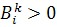
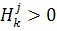
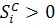
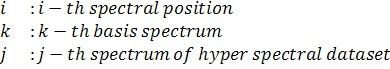
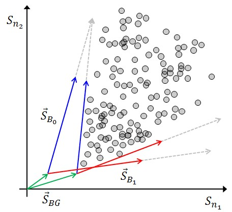

非负矩阵分解（NMF）是一种用于从高光谱数据集中评估分布图、解混基光谱和恒定背景光谱的方法。这种多变量分析要求分布图、基光谱和恒定背景光谱中仅包含正值。它基于 光谱叠加（数学） 一文中描述的基本方程：

约束条件：




NMF算法是迭代的，并通过以下步骤收敛到具有最小误差的解：
- 初始化基光谱、分布图和恒定背景光谱。
- 优化基光谱
- 归一化基光谱
- 优化分布图
- 优化恒定光谱
- 如果这不是最终迭代：
将恒定光谱和基光谱拉入高光谱数据集的数据中 - 重复步骤2至6，直到误差足够小或达到最终迭代次数
另请参阅
备注
恒定光谱
如果恒定光谱是平坦的，则可以在步骤5中优化与光谱无关的偏移量。
解的唯一性
一般情况下不存在唯一解，因为存在无限多个满足上述约束条件的解。

通过将恒定光谱和基光谱拉入高光谱数据集的点云中，可以确定一个接近纯光谱的唯一解。此外，这保证了该解对高光谱数据集的描述相对于噪声（例如读出噪声）是对称的。
拉入的强度必须由用户调整。